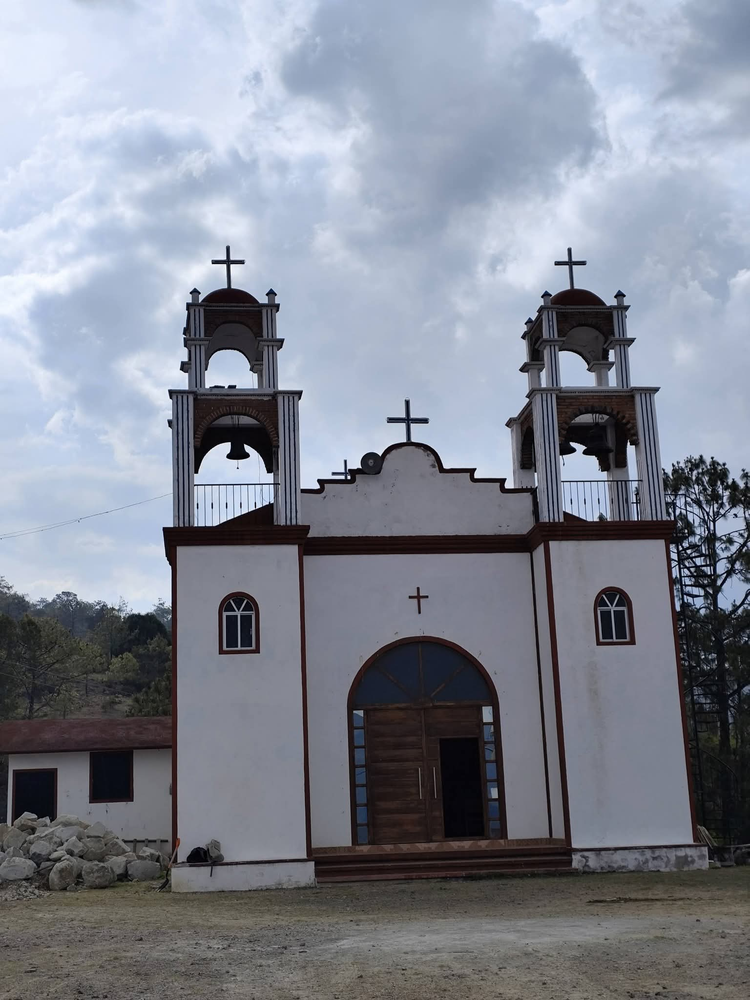

|
|
 |
Juan Escutia Fue fundada en 1960 su primer agente pascual Hilario , la primera comunidad de cuquila en separarse el cual tambien era la comunidad mas grande, esta comunidad se separo en diferentes pafartes, el cual el primero fue ecandaba en el año 2008, despues san juan del rio en el 2010, y por ultimo magueyal en el 2019. Su fiesta patronal de la comunidad es el 24 de junio, el cual se hacen encuentros de basquet, carrera de caballos y el 23 se hace el baile.
|
| |
|---|